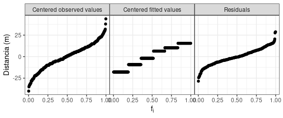
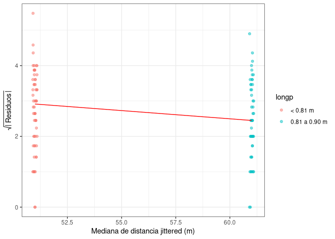
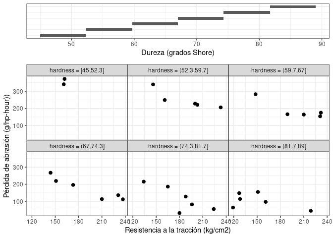

|||||| Work in progress |||||| En construcción ||||||
|||||| Work in progress |||||| En construcción ||||||

Web: https://mpru.github.io/ggcleveland/
Este paquete implementa algunas funciones para crear las versiones en ggplot2 de algunos gráficos presentados por Cleveland en su libro “Visualizing Data”. Ha sido creado para ser usado en cursos de Análisis Exploratorio de Datos. Se encuentra en desarrollo y aún no ha sido usado con diversos conjuntos de datos. Cualquier comentario o sugerencia es bienvenida.
This package provides functions to produce ggplot versions for some visualizations tools described in Cleveland’s book “Visualizing Data”. It is an experimental package, and was thought to be used in the context of a course on exploratory data analysis. Any contributions or feedback are appreciated.
Instalación / Instalation
Se puede instalar la versión en desarrollo del paquete ggcleveland desde GitHub con:
# install.packages("devtools")
devtools::install_github("mpru/ggcleveland")Ejemplos / Examples
gg_quantiles
La función gg_quantiles() produce gráficos QQ (cuantil-cuantil) para comparar la distribución de una variable cuantitativa en dos o más grupos:
# Paquetes, datos y configuraciones
library(ggcleveland)
library(ggplot2)
library(dplyr)
#>
#> Attaching package: 'dplyr'
#> The following objects are masked from 'package:stats':
#>
#> filter, lag
#> The following objects are masked from 'package:base':
#>
#> intersect, setdiff, setequal, union
theme_set(theme_bw() + theme(panel.spacing = unit(0, "lines")))
data("futbol")
# Dos grupos
futbol2 <- dplyr::filter(futbol, longp %in% c("< 0.81 m", "0.81 a 0.90 m"))
gg_quantiles(futbol2, dist, longp)
# Más de dos grupos
gg_quantiles(futbol, dist, longp, size = 0.4, color = "red", shape = 3) +
labs(title = "Gráficos QQ de a pares", x = "Distancia (m)", y = "Distancia (m)")
#> Warning: Use of `dataTexto$varX` is discouraged. Use `varX` instead.
También permite graficar los cuantiles de cada grupos vs cuantiles calculados con todos los grupos combinados. Esto puede ser útil para estudiar residuos luego de algún ajuste:
futbol <-
futbol %>%
group_by(longp) %>%
mutate(ajuste = mean(dist), res = dist - ajuste)
gg_quantiles(futbol, res, longp, combined = TRUE) 
gg_tmd
Las funciones gg_tmd() y gg_tmd_paired() producen el gráfico de medias-diferencias de Tukey (Tukey’s Mean-Difference Plot):
# Dos grupos
gg_tmd(futbol2, dist, longp)
# Múltiples grupos
gg_tmd(futbol, dist, longp, size = 0.5)
#> Warning: Use of `dataTexto$varX` is discouraged. Use `varX` instead.
# Datos apareados
gg_tmd_paired(ozone, stamford, yonkers)
#> `geom_smooth()` using formula 'y ~ x'gg_rf
La función gg_rf() produce un residual-fit plot (gráfico de residuos y valores ajustados):
gg_rf(futbol, dist, ajuste, res, ylabel = "Distancia (m)")
# Agregando las observaciones centradas por la media general
gg_rf(futbol, dist, ajuste, res, cen_obs = TRUE, ylabel = "Distancia (m)")gg_sl
La función gg_sl() produce un spread-location plot:
gg_sl(futbol2, dist, longp, xlabel = "Mediana de distancia jittered (m)")
gg_pt
La función gg_pt() produce un gráfico para evaluar transformaciones de potencia, que consisten en elevar a las observaciones a un conjunto de potencias señaladas en el argumento taus, en el cual el valor 0 indica la transformación logarítmica:


gg_coplot
La función gg_coplot() produce conditioning plots o coplots, los cuales son una herramienta de visualización útil para estudiar cómo una variable respuesta depende de 2 o más factores. Un coplot permite visualizar dependencia condicional.
# Slicing con intervalos solapados
gg_coplot(rubber, x = tensile.strength, y = abrasion.loss, faceting = hardness,
number_bins = 6, overlap = 3/4,
ylabel = "Pérdida de abrasión (g/hp-hour))",
xlabel = "Resistencia a la tracción (kg/cm2)",
facet_label = "Dureza (grados Shore)",
loess_family = "symmetric", size = 2)
#> `geom_smooth()` using formula 'y ~ x'
# Slicing con intervalos sin solapamientos, con igual amplitud
gg_coplot(rubber, x = tensile.strength, y = abrasion.loss, faceting = hardness,
number_bins = 6, overlap = 0,
ylabel = "Pérdida de abrasión (g/hp-hour))",
xlabel = "Resistencia a la tracción (kg/cm2)",
facet_label = "Dureza (grados Shore)",
loess = FALSE, size = 2)
# Slicing con intervalos sin solapamientos, con aprox. igual cantidad de datos
gg_coplot(rubber, x = tensile.strength, y = abrasion.loss, faceting = hardness,
number_bins = 6, overlap = 0, equal_length = F,
ylabel = "Pérdida de abrasión (g/hp-hour))",
xlabel = "Resistencia a la tracción (kg/cm2)",
facet_label = "Dureza (grados Shore)",
loess = FALSE, size = 2)
# Slicing con los valores únicos de la variable de faceting
gg_coplot(galaxy, x = posicion.radial, y = velocidad,
faceting = angulo, number_bins = 7, loess_span = .5, loess_degree = 2,
facet_labeller = function(x) paste0("Ángulo = ", x, "º"),
facet_label = "Ángulo (grado)", facets_nrow = 2, intervals_height = 0.2,
xlabel = "Posición radial (arcsec)", ylabel = "Velocidad (km/s)")
#> `geom_smooth()` using formula 'y ~ x'